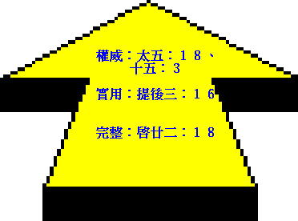
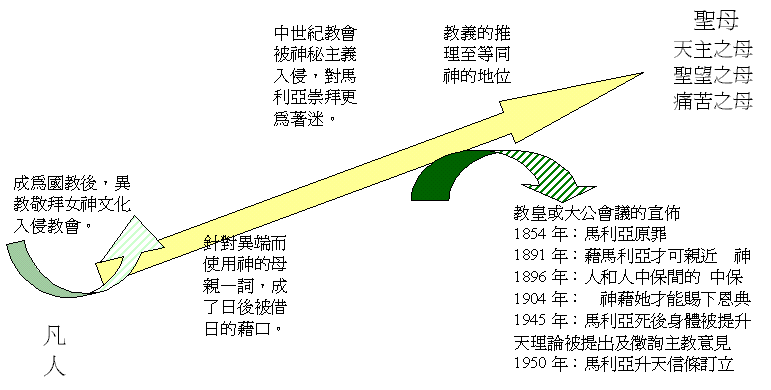
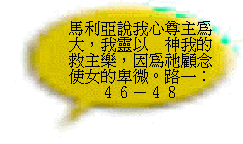
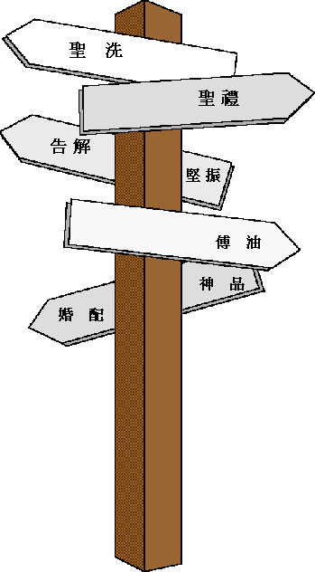

第三課：大公教會（中）
２）聖經的受貶
ａ）不明的權威
| 在成為國教後的教會，因採用教父耶柔米的拉丁文譯本作為官方聖經，但拉丁文卻不能適切的將原文意思表達出來，因而造成後世的偏離。教會在中世紀的變質後，為了要附合已被接為教義的錯謬道理，因而把兩約之間出現的次加入正典聖經中作為支持。 | |||
| 以主教才有權威閱讀經聖經，故禁止信徒讀聖經，在歷史上多次禁止信徒讀經的諭令，現今雖容許卻必須按天主教會的解釋來理解。 | 以天主教會擁有教導、解釋和傳講的權威，另曲解帖後二：１５的話作為教會傳統的支持，以在聖經以外仍有新的啟示， 神能藉教皇頒佈出來。更在一九六二年梵蒂岡大公會議中宣稱文字的聖經不是聖經所要傳給人們信息的惟一工具，而自行加上傳統。 | ||
| 惟獨聖經 | |||
ｉ）聖經的禁讀：
羅馬天主教在昔日是禁止信徒閱讀聖經，並以拉丁文的武加大譯本（根據希臘文七十士譯本翻譯過來，當中有不少錯譯的地方）作為最高的權威。
α）在主後五九零年（教皇大貴利）至一五一七年（馬丁路德改教時代）止，聖經在天主教會中均被認為是一本「封鎖的書」（ＣＨＡＩＮＥＤ ＢＩＢＬＥ），原因可能有三：一是抄本聖經體積巨大，不宜普及收藏，二是手抄本聖經價值昂貴，封鎖以防遺失，三是天主教認為唯有主教才能正確解經，非聖品人員易錯解聖經而成異端。他們以主教是賦有特殊恩寵或神恩，能在信仰和教義的爭執中，掌握真理這一面，因主教是直接承繼使徒的人，他與教會最初的解釋的傳統，有直接關係。現今的天主教以「為了防止被盜」及「為了讓學生容易找到」作為理由。
β）主後一五一七年宗教改革後，天主教更明文禁止讀聖經，特別是更正教出版的聖經譯本。例：主後一五三零年，教皇將布魯西歐里翻譯的意大利文聖經列入禁書索引。教皇利奧十二世（ＬＥＯ ＸＩＩ）、比烏八世（ＰＩＵＳ ＶＩＩＩ）、比烏十世（ＰＩＵＳ Ｘ）均有禁止天主教信徒讀更正教出版的聖經。
ｉｉ）傳統的權威：
近年來雖然容讓信徒閱讀聖經，又容許將聖經翻成各國的文字，但必須根據教會的所定的方法來解釋聖經。
「雖然我們分離的基督徒相信聖經有權威，但是在對聖經與教會的關係上，他們的看法與我們不同。因為按著天主教的信仰，教會因著有教導權威，在解釋和傳講神的話上站著特殊的地位。」【法令第二十頁】
「天主教會得神賜予了神所啟示的真理及全部的恩典」【法令第七頁】
「在不同的代及不同環境下，一些道德行為或教會紀律的執行，甚致教會的教訓訂定可能有缺欠──但要小心留意，教訓的訂定和信仰或信心的交託要分清楚。」【法令第九頁】
主後一九六二年的梵蒂岡第二屆大公會議表示：
α）「文字的聖經，不是聖經所要傳給人們訊息的唯一工具。」
β）「傳統與聖經均來自同一神聖的根源，指向同一的目標。」
γ）「傳統是『天主施予』給教會生活方式批判活動的一種溝通。」
彼得臨離世前卻強調信徒要留心的是聖經上的話，及明言使徒們所傳的乃是聖先知的豫言及救主的命令，參彼後一：１９—２１、三：１—２。卻沒有將甚麼的傳統等同聖經的地位。保羅也教導提摩太要在教會中宣讀 神的話，而不是講論人的傳統，參提前四：１—１３。若我們留心保羅在加一：６—９ 的話，可是救恩的真理沒有可加添或減少（改變）的地方，日後的傳統怎可以高過聖經呢？這明明是保羅所題及該咒詛的事。另天主教曲解帖後二：１５的話，保羅不是指著口傳的傳統，乃是指他曾向帖撒羅尼迦人所證明的福音。
ｉｉｉ）加添及減少：
α）次經的加添：
天主教的權威譯本──武加大譯本的翻譯者耶柔米，沒有翻譯現在天主教聖經內的次經，因他本人不承認次經的地位，而且在猶太舊約正典中也沒有次經的位置。但天主教加添次經進入武加大譯本中是為了要支持他們兩項教義，就是「靠行為得救」及「為死人代禱」，因只能在次經的多比書十二：９ 及瑪迦比後書十二：４６中找到。但主耶穌及使徒們沒有一次引用次經的話，早期教父也不認同次經有著聖經正典的地位。在改教後，天主教會為了對抗更正教，特別在天特大會再一次承認次經的地位，並在列舉聖經及經的書目之後說：「任何人不接受這些書──就是天主教會公認的舊本武加大聖經為正典；或是故意藐視前面所提到的傳統，願他受咒詛。」其實舊約的次當中多有與 神所默示聖經的不合，及所記載的歷史及地理資料均與事實相違背，絕不可能是 神所默示的真理。
β）十誡的更改：
為了要配合他們敬拜古聖徒的像，他們將十誡中第二誡論拜偶的禁令與第一誡合併，再將第十誡分為兩條誡。並且引用及曲解聖經來支持他們的謬論：一是以會幕中有基路伯的刺繡，以 神容讓人製像。二是以 神吩咐摩西制銅蛇，叫人仰望得醫治。
可是我們要留心，舊約的聖所不是每個人都可以進入，故人不可能敬拜基路伯，並且幔子上繡上的基路伯是告訴人不可以隨便進入至聖所，因基路伯是守著伊甸園的路，不容人進入。大祭司一年一次的進入，必須有血彈在幔子上，表示藉羔羊血的遮蓋，並滿足了公義的要求，否則難逃避過基路伯的殺害。另希西家年間，因著百姓敬拜摩西所作的銅蛇，希西家就將銅蛇打碎，表示 神根本沒有贊同造像及拜偶像。參列王紀下十八章四節。
ｂ）不變的立場

ｉ）權威性問題：個別主教、主教會議、公會會議均不能取代聖經之權威性，故效於使新制定之傳統化成聖言。
例：「耶穌回答說：『你們為甚麼因著你們的遺傳，犯了 神的誡命呢？』」太十五：３
「．．．．．．這就是你們藉著遺傳、廢了 神的誡命。」
ｉｉ）生活性問題：聖經乃一本萬應的書，有沉重教義部份，也有濃厚的生活教導，足以面對時代帶來的各種挑戰，這就是真理的全面性。參提摩太後書三章十六至十七節。
ｉｉｉ）完全性問題：聖經明講其啟示的完全性，毋增添，否則必予重判，參啟廿二章十八至十九節。
３）聖母的迷戀
ａ）不住的高升

ｉ）自羅馬君王奉基督教為國教，但同時也令異教敬拜女神的色彩；被帶入教會中，為
後世留下了危機的伏線。（女神的敬拜最早源自寧錄的妻子）
ｉｉ）主後四三一年，以弗所大會議為針對異端，而強調主耶穌的神性，從而發明了「神的母親」這名詞，成為日後天主教借用的籍口。（當時所強調是證明主耶穌有神人二性）
ｉｉｉ）中世紀時，天主教會的腐敗而進入神秘色彩，撒但乘虛而入，制造許多與馬利亞有關的靈驗神蹟，使人對「她」更狂熱的敬拜，亦使「她」的地位不斷提高。（這些靈驗神蹟使人更不注意基督，豈是 神作工的法則呢？因基督是被父 神所高舉的。）
ｉｖ）今天更發展至敬拜馬利亞的像，及向馬利亞祈禱（以由仁慈之母轉求公義的父）。並從所用的唸珠看到，每一圈要唸信徒一次、六次天主經、六次聖三光榮經及一次歡喜五端，但卻背五十三次聖母經。天主教每年有八個節日、兩個月（五月是聖母月，十月是玫瑰月）及每星期六都是特別恭敬聖母的日子。並且天主教以「每個特敬聖母的地方均是朝聖的好去處，天主曾賞賜許多恩寵，以表示祂嘉許這種朝聖。」
辯正：聖經中沒有叫人敬拜馬利亞，也沒有明顯或暗示馬利亞的地位超越。
「進了房子，看見小孩子和祂母親馬利亞，就俯伏拜那小孩子，揭開寶盒，黃金乳香沒藥獻給祂。」太二：１１──是拜小孩子、卻不馬利亞，獻給小孩子卻不馬利亞。而且聖經論及主耶穌時，馬利亞的名字總是在後面。
ｂ）不爭的事實
 |
||||
| 保羅：在 神和人中間只有一位中保，乃是降世為人的基督耶穌。提前二：５ | ||||
ｉ）天主之母
天主教承認聖經中沒有「天主之母」這名稱，但卻以為有根據：（引以下天主教的聖經）
「那要誕生的聖者，要稱為天主的兒子。」路加福音一：３５
「但時期一滿，天主就差遣了自己的兒子來，生於女人，生於律法之下。」迦拉達書四：４
「按血統說，也是從他們來的，．．．．．．」羅馬人書九：４
因聖經記載主耶穌是從馬利亞而生，並且所生的是天主子，故以馬利亞為「天主之母」。
辯正：這些經文是指出主人性的一面，沒有將馬利亞升格為神，並且他們根據的是大公會議中的名詞，在聖經中根本沒有這種意思，而引用的經文又是被利用來支持他們的理論。根據路一：４６—４７ 的話，馬利亞自承為婢女及需要救主，又何以躍升為「神的母親」？路二：４８—４９及約二：３—４等，主耶穌以馬利亞沒有權來干涉祂的行事。若以主耶穌是無罪，便認為其生母也是無罪，這樣的邏輯便會引伸至夏娃也是無罪，那麼人又何需要救主呢？主耶穌的無罪是因聖靈感孕而生！
ｉｉ）聖望之母
天主教說：「馬利亞的信德擊破『十字架與天主子』之間的矛盾，在完全絕望的境況中，她沒有像其他動搖的門徒，更沒有像跌倒三次的伯多祿，她的信德成為了我們的『聖望之母』」
辯正：其他的婦女的信德為何不被提及呢？並使徒約翰所表現的豈不更堅定嗎？為何不以他的信德作榜樣呢？
「你們蒙召原是為此，因基督也為你們受過苦，給你們留下榜樣，叫你們跟隨祂的腳蹤行。」彼前二：２１，天主教所尊稱的彼得，卻教導我們單單以主耶穌為榜樣，卻沒有吩咐我們要以馬利亞為榜樣。
ｉｉｉ）痛苦之母
以馬利亞在十架下，那種和諧和愛的疼痛，參與了耶穌在十架上無罪的痛苦，顯示她對天主，對人的愛，襄助了救贖工程的完成。
辯正：馬利亞的痛哭是表現她內心的感受，根本與救贖無關。根據希伯來書九章十四節的話：「何況基督藉著永遠的靈，將自己無瑕無疵獻給 神．．．．．．」，作者對第二代的信徒提及主救贖的事，並沒有提及有馬利亞襄助的成份在內，只單單論及三位一體 神的同工。
ｉｖ）教義的推理
一八五四年：定「馬利亞無原罪」的信條，由教皇庇烏九世宣佈馬利亞生下就沒有原罪。
辯正：但天主教所高舉的兩大神學家聖奧古斯丁及聖多瑪斯，卻同樣認定馬利亞是有原罪的，因馬利亞若沒有原罪及本罪，則反證基督的救贖不是完全及普及的，但這是不可能的事
「我是在罪孽裡生的，在我母親懷我胎的時候就有了罪。」詩五十一：５
「這就如罪是從一人入了世界，死又是從罪來的，於是死就臨到眾人，因人眾人都犯了罪。」羅五：１２
一八九一年：教皇利歐十三世宣稱，人必須要經過馬利亞方可以親近基督。
辯正：耶穌基督在世的時候，人常常親近祂，反而馬利亞被拒在外，需要別人來向主耶穌通傳，參太十二：４６—４９。
一八九六年：教皇利歐十三世再次宣佈馬利亞為「人和中保間的中保」。
辯正：若有「人和中保間的中保」，中保本身就已不是中保了，這是拒絕主耶穌中保的地位。
一九零四年：教皇庇烏十世宣稱，神藉馬利亞才能將恩典賜下來。
辯正：「恩典和真理，都是由耶穌基督來的。」約一：１７，及「所以我們只管坦然無懼的來到施恩的寶座前，為要得憐恤，蒙恩惠作隨時的幫助。」來四：１６，恩典是從主來的，並且 神應許我可以「隨時」得著。
一九四五年：教皇庇烏十二世曾發出一個調查表，徵求各主教的意見，看他們認為是否教皇應當宣稱馬利亞死後身體即被提升天一事為教諭，大多數主教都熱烈的贊成。
辯正：多人的決定豈可以強求 神去作成呢？多人所議定的又可以成為真理嗎？
「眾人以為美的事，要留心去作。」羅十二：１７
一九五零年：定「馬利亞身體升天」的信條，意思是馬利亞在世上死時，她的肉體沒有腐爛，而是直接升上天上去了。因此，他們認為馬利亞是信徒和主耶穌之間的中保，信徒要向馬利亞禱告，主的一切福氣包括救恩都是從馬利亞賜下來的。實際上，在天主教的救義中，馬利亞代替主耶穌作了祂所作的一切工作，只差沒有稱馬利亞為救主。
辯正：「除了從天降下仍舊在天的人子，沒有人升過天。」約三：１３，除了主耶穌外，沒有人是自己可以升天，都是被接升天。
４）聖禮的混亂
| 彼前三：21明顯指出洗禮不能除罪，不能帶來救恩。但他們不但以洗禮可除罪，還以不受洗而死便立刻下地獄。 |  |
餅與杯是記念主曾作的救贖，但化質說實以主耶穌再作十架上的獻祭，實是明明重釘主耶穌在十架上。 | ||
| 聖經沒有分大罪與小罪，至於死與不至於的罪是指犯了地上的法律而已，而赦罪權柄從來只屬於 神，人只能因人聽福音按真理為 神宣告罪得赦免的事實，並不代表人有赦罪權柄。 | ||||
| 聖經從沒有這回事，不過是人為的產品。 | ||||
| 錯用雅五：14的話，其中重點在禱告而不是傅油，也沒有告罪成份或臨終告解傅油之意。 | ||||
| 把表徵之事視為實體，誇大了其意思至認為由基督親手設立，認為婚姻主要目的在生育和教養兒女，其次才為互相愛助。 | 強化教會領袖的神權，而忽略信徒皆為祭司的真理。另因強化而產生聖人的觀念，以可借助其功德來補個人善行的不足，加上了由神職人員宣佈的煉獄及贖罪等問題，更益加強了神品的權力，也引伸更多的錯謬。而歷代由天主教會策封的聖人及被高舉的聖物也不計其數，讓人迷戀在基督以外的救贖途徑，至終帶來可悲的結局。 | |||
得救的七階梯
？當中基本的觀念是藉行為得救，與聖經上單單因信耶穌基督而稱義是大有分別，其理念上又有矛盾，以婚配為七聖事之一，但神職職人員卻要求嚴守獨身。人得救是單單信靠耶穌基督，若加上了其他的人為方法便是把救恩變質至使人走向滅亡之路。
脫離騰大公會議（ＴＲＥＮＤ Ａ．Ｄ．１５４５—１５６３）訂：「新約一切聖事都由基督建立．．．．．．新約聖事共有七件．．．．．．新約的聖事對人的得救是必要的．．．．．．新約聖事包涵它所表示的恩寵，並把恩寵賦與未置阻礙的接受者．．．．．．聖事本身產生效果．．．．．．」
ａ）聖洗
「以聖洗免除一切罪罰，即永罰與暫罰．．．．．．自福音被弘揚以來，所有人的得救，必須經由水的洗禮．．．．．．．給尚未達理智年齡的兒童所施洗禮是有效的，也是許可的．．．．．．聖洗聖事是最要緊的，因為不領洗，不能升天堂，也不能領別的聖事．．．．．．」按天主教的教訓，聖洗有以下的功效：
ｉ）可以洗去原罪及成人所已犯過的具體的罪。
ｉｉ）人因水禮可以得新生命，成為神的兒女。
ｉｉｉ）水禮使人能以穿上聖潔，配給聖神居住。
ｉｖ）使人有資格成為天堂的後嗣與基督同作後嗣。
辯正：根據彼前三：２１「這水所明的洗禮，現在藉著耶穌基督復活也拯救你們，這洗禮本不在乎除掉肉體的污穢，只求在 神面前有無虧的良心。」洗禮根本不能使罪得赦。
根據約三：１６「 神愛世人，甚至將祂的獨生子給他們，叫一信祂的，不至滅亡，反得永生。」洗禮不能使人上天堂，只有真心相信主耶穌，成為 神的兒女才可以得永生，最好的例證是十架上的悔改的強盜，主應許他得進樂園。
ｂ）堅振
「堅振是一項真正的名符其實的聖事．．．．．．只有主教是堅振的通常施行者．．．．．．堅振賦與天主聖神的七恩（即靈魂的七種美情，使人順聽聖神的默導，克己修德，暢快走真福的道路。」
辯正：聖經中根本沒有堅振這回事，乃是天主教自行加添的聖禮。流露屬靈美德乃是聖靈所結的果子，與儀式根本沒有關聯。
ｃ）告解
「聖事的告罪由天主所規定，對於得救是必要的．．．．．．小罪不必告明，但告明是許可而有益的．．．．．．耶穌復活當天晚上，發顯給宗徒們的時候，制定了這件聖事．．．．．．告解是要緊的，因若不肯告解，大罪不得赦．．．．．．」
天主教又將罪分為大罪與小罪，或不可赦免的罪及可得赦免的罪兩種。原罪和不信天主教是大罪，生活中所犯實在的罪是小罪。在天主教裡相信主耶穌的人，大罪因信得到赦免。另方面大罪是指那些明知故犯的罪，而且又明知此罪的結果而仍故意去犯的罪，這種罪能毀壞人超然的生命，且重重的得罪神，所以犯這罪的人，應當在地獄中受永遠的刑罰。小罪是那些結果不十分嚴重，或者結果嚴重，而犯罪的人在犯時不知道其結果與性質的嚴重，或者不是太樂意的去犯的。這樣的罪會減弱人事奉的熱心，使人容易去犯大罪。但這樣的罪是可以赦免的，卻要憑自己的功勞，赦免的方法是靠「告解」和「補贖」。告解有五條要緊的規矩：省察、痛悔、定改、告明及補贖。
ｉ）省察：用心考察自己或從領洗以來，或上次需要告解以來所犯過的諸罪。該查明各大罪的次數，並改變罪類及加重罪過的光景，如此用心因為這是有關升天堂或下獄的事情。
ｉｉ）痛悔：分愛天主主惱恨罪的上等痛悔及怕天主罰下地獄的下等悔改。凡有死的危險帶著大罪又不得告解時，就該發上等痛悔，才救得靈魂。若只有小罪，恐怕難發真心痛悔，就可以在告明後，把從前告過的大罪再告一、二條。
ｉｉｉ）定改：有真心痛悔就有真心定效。
ｉｖ）告明：要完全、老實、清楚將大罪的次數或記不清的大約次數一一在神甫跟前，告說明白。
ｖ）補贖：在告解的時候，神甫按罪過的輕重，所罰的神工。如守彌撒、作教會的工作、認罪、捐錢、點臘燭、受苦等。但天主不赦免暫罰，故要在世上或煉獄裡繼續作補贖。按天主教的教訓，告解與補贖可以有以下的功效：
α）可以使人成聖的恩典。
β）使罪得赦免。
γ）可以除去永世裡的刑罰，必要時也可除去一部份今天的刑罰。
δ）可幫助人在未來能避免犯罪。
ε）恢復因犯罪而失掉的好行為的功勞。
辯正：孟他奴派在他們教會的懲戒上，甚為嚴格，他們把罪分為可以寬恕的和不可寬恕的二種，即在今世能夠得到赦免的和不能赦免的罪。後來羅馬天主教，把罪分為可赦色的罪和死罪，可是所列出的罪不完全相同。這是錯解聖經的話，至於死及不至於死的罪是指地上法律所定的罪罰，而不是屬靈的問題。他們錯解約廿：２１—２３ 的話，主耶穌命門徒去傳道，人因聽信福音而罪得赦免，門徒便按真理來宣告他們的罪蒙 神赦免，卻不是門徒有赦罪的權柄。罪在 神的眼中都是可惡的，沒有大小之分，這樣的分法全是出於人的觀點。根據可二：６ 「除 神以外，誰能赦罪呢？」人是沒有權柄來赦罪，人只可以作饒恕的那部份。
ｄ）聖體
「聖體的材料是麵餅和酒．．．．．．基督的體與血確實地，真正地而且本質地臨在聖體之中．．．．．．由於麵餅的全部體質轉變成基督的身體，酒的全部體質變成祂的血，因此基督在聖體聖事中．．．．．．在體質變化以後，餅與酒的形態繼續存在．．．．．．聖體是聖教中至尊大的聖事，實在是主耶穌的天主性、人性、靈魂、肉身、寶血、全在餅酒內隱藏著，當作祭品獻與天主聖父，這樣重行十架上的祭獻．．．．．．在望彌撒時要領聖體，因為彌撒是成聖體，祭獻天主的大禮．．．．．．天主教信徒應當喜歡朝拜聖體，在聖體台前，表明我們恭敬、欽崇，以愛還愛的心。」
天主教以神甫與信徒之間有一個生命上絕對的分別，因此信徒不能直接親近神，一定要經過神甫才可以；信徒犯罪必須要向神甫認罪；領聖餐時平信徒只能領餅，不可以飲杯，因為他們和神甫與神之間的關係是不同的。天主教有聖體出遊，讓信友瞻望及跪拜，因而蒙聖體降福。
辯正：餅與杯是表徵，沒有實質的效能，而且天主教相信在彌撒的聖體中，主耶穌重臨再作十架上的獻祭，這正是明明的重釘主耶穌在十架上。救恩已經是完全的，無需再有其他的祭祀。
「我們憑這旨意，靠耶穌只一次獻上祂的身體，就得以成聖。」來十：１０
「因為他們把 神的兒子重釘十字架，明明的羞辱他。」來六：６下
ｅ）傅油
「病人傅油禮是由基督所建立的一種真正而狹義的聖事．．．．．．惟主教及司鐸能有效地施行傅油禮．．．．．．平日該常求天主賞賜這個大恩，到病重的時候及早請神甫，先辨妥當神工，領臨終聖體，然後病人傅油聖事．．．．．．終傅油完成告罪的工作：病人由於病苦，或者半昏迷的神智往往不能作完全的告罪，而終傅油聖事，卻可以赦免那病人不能告明的，甚致不能完全告明的罪孽。在這樣的環境中，終傅油聖事為救靈魂是必需的，為補贖小罪和洗滌殘餘的罪過。
辯正：引用雅五：１４中的話，卻硬把長老解作神甫，而且那段經文強調的不是油，而是禱告，也沒有告罪的成份，也不是指臨終的傅油。
ｆ）神品
「神品是由基督所建立的一件真正而狹義的聖事．．．．．．分兩等，一是主教，一是司鐸（祭司）．．．．．．有善表美名，有天主聖召，又沒有法定阻礙的人，才可以領神品．．．．．．根據教會法律，只有男性才可以領受神品，且在西方教會中司鐸必須先選擇了獨身。本來神品聖事本身並不要求獨身生活，並且在初世紀時，教會中也同時有已婚和獨身的司鐸。主後一五六三年的脫利騰大公會議中，才正式使用司鐸獨身成為教會的法律，至今依然奉行。」
辯正：強化了教會領袖的神權，卻忽略了信徒皆為祭司的真理。
「惟有你們是有被揀選的族類，是有君尊的祭司，是聖潔的國度，是屬 神的子民．．．．．．」彼前二：９
ｇ）婚配
「婚配是由基督所建立一件真正的與狹義的聖事．．．．．．使婚配無效的阻礙，無論是天主立的，或是聖教會定的，若犯了，不僅有背命的大罪，而且在天主教會面前，婚配不算有效，必該離散，這樣的阻礙共有十五條，其中容易遇到的，特別是歲數不足，或同教外人結婚．．．．．．凡天主立的，萬萬不能寬免；凡是聖教會定的，若有正當的緣故， 有時能寬免．．．．．．」天主教認為婚姻主要目的是生育和教養兒女，其次才是為互相愛助，故此禁止離婚、獨身犯邪淫，節育、墮胎等。
辯正：他們把表徵的東西當作賦給真實聖寵的聖事，屬實有點誇大，並且將婚禮看為是基督親手的設立，沒有想到主耶穌曾經說：「因為有人生來是閹人的，有人生來是被人閹的，並有為天國緣故自閹的。」太十九：１２